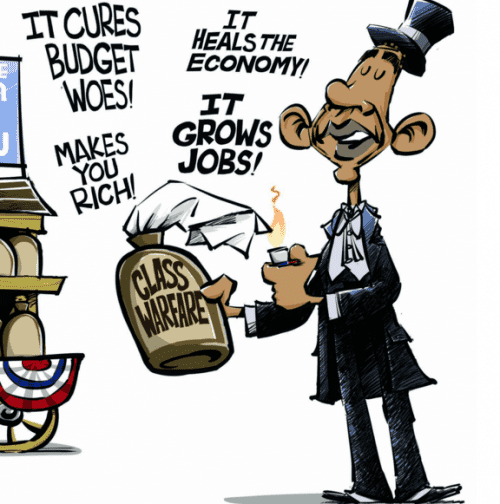
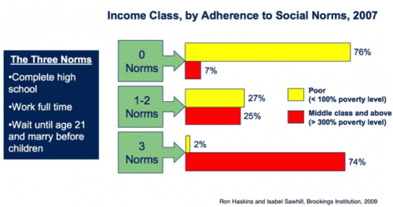

Rod Berne is a student, writer, and thought criminal. His columns run every Saturday. Follow him on Twitter.


Why are affluent, college-educated people leftists? Many people have realized that one prominent aspect of the leftist agenda is the intentional destruction of the family. The foot soldiers for this agenda are college students. The traits that characterize young people are perfectly suited for these purposes: media savvy, sociable, and outspoken. The reason college students are leftists is because they want to ensure the working class never breaks free from their chains. In short, college students hate poor people and want them to stay poor.
There are three ingredients in the strategy of the affluent to keep their boot on the necks of the poor: social liberalism, social signaling, and maintaining the structure of the system.

In one of my classes at Yale, the professor took an anonymous informal survey of the class. He asked the students in my class three questions:
The total percentage for each question ranged from 90-95%. Yet if you asked these same students about their thoughts on single motherhood, women in the workplace, or divorce, they would be firmly in support of all of these issues. None of them questioned whether the reason they had stable childhoods, attend a top tier college, and come from families making more than double the average annual income ($120,000 per year compared to the average of $52,000) is because their families followed traditional social norms.
Why is it that affluent students are pushing ideas like avoiding marriage or promoting single-parenthood, which are obviously bad for individuals and families? The reason is because they hate poor people, at least subconsciously. These individuals have enjoyed all of the benefits of the traditional family and conservative values, while promoting an ideology that is destructive and promotes the destabilization of families in lower social classes.
Social liberalism is a method to hoard wealth and maintain the upper-hand. Liberal college students bask in the upsides of stability, while pushing instability for others so they will never climb the socioeconomic ladder. It is a subtle and ingenious method, because they get to feel good about themselves for being “open” and “accepting” all while enjoying the fruits of a value system they claim is oppressive.
3 valued items for the college liberal: MacBook, Canada Goose jacket, and social media
In a recent article in Harvard’s student newspaper, the author describes a common zoo animal seen at many elite colleges—The Privileged Liberal:
You’ll oftentimes find Harvard’s Privileged Liberal studying in a coffee shop (Starbucks, no less) sipping on a pricey macchiato. As they flip through the pages of their assigned readings, a notification pops up on their iPhone: Social Justice Club meets in 10 minutes. They get up and walk towards the door, their designer boots clicking loudly on the floor. As they exit the coffee shop they pass by a homeless man, slumped over on his side as he shivers in the New England cold; they pay no attention, wearing their brand new Canada Goose jacket (retailing at about $600 a pop)—it provides only enough warmth for one. They arrive to their meeting just on time, and as they sit down and pop open their shiny Macbook Pro, they share Bernie Sanders’s latest speech on Facebook as he attacks the ‘billionaire class.’
This is as accurate a description of the average college liberal as I have ever seen. If you ask one of these students how to best help the poor, they will undoubtedly give you answers ranging from “free education,” “access to healthcare,” and “increase the minimum wage.” All of these answers generally have one theme in common: more government.
This is entirely by design. The more power individuals hand to the government, the more the poor rely on those in power for their livelihood, the less likely they will be able to climb out of poverty and reach the same positions that the Privileged Liberal is on track to attain.

These students have been conditioned to never under any circumstances reflect on their own privileged upbringing and wonder whether a traditional family structure is beneficial for people other than themselves. These students did not come from a background of government handouts, out-of-wedlock marriages, and divorced households. But if you asked them how to address the problems of poverty, they will say that the government isn’t doing enough to help them. Students will never question whether more government might actually perpetuate the problem.
Common career paths of compassionate Yale students
As you read the description of the Privileged Liberal, you may have smiled at the hypocrisy of a student who rails against the “billionaire class” while wearing a $700 jacket and typing on a $2000 luxury device built by slave labor.
This is another aspect of college leftism that indicates their disgust for the poor. They wear overpriced clothing and purchase electronics made by child labor without a second thought. Yet they jump at the chance to put a Bernie sticker on their MacBook or post a 400-word screed on the evils of capitalism on Facebook. Why wear a Bernie pin on their jacket rather than forego the jacket and donate the money to charity?
The reason is social status. Individually, wearing a Bernie pin or sporting a Canada Goose jacket will provide some measure of status, but combined they send a powerful signal: “I am a member of two tribes: The well-off group that can afford an expensive jacket, and the compassionate liberal group who wants to help the poor.”
Another method they have recently been using to signal their social class is to ensure that everyone around them knows they hate Donald Trump. Even among conservatives the only candidate they have openly supported is Marco Rubio. This is because he is non-threatening, young, and Hispanic.
Trump has been an icon for the working class, and so all elitist college students, whether liberal or conservative must show their dislike for him. Tucker Carlson wrote a piece in Politico on this very subject: “If Trump is leading a populist movement, many of his Republican critics have joined an elitist one. Deriding Trump is an act of class solidarity, visible evidence of refinement and proof that you live nowhere near a Wal-Mart.”
Even for conservative college students, insulting Trump is a form of cheap and easy social signaling that says, “Though I am a conservative, I’m still a member of the upper-class. I’m not one of them.”
College students are conscious of their hatred of the poor and desire to suppress the lower classes. However, one question that is raised is where their disdain for marginalized groups originated. The answer is the system. Power wants to perpetuate itself. But in the last 10 years our society has swerved into egalitarianism.
It is no longer cool to blame people for their own problems and so the powers-that-be have constructed a plan to allow affluent college students to do their bidding. They enjoy the perks of their social class while promoting values that appear to be compassionate and tolerant, yet are destructive. This method aims to prevent any sort of change within the system by perpetuating the social ills that have sustained it thus far.
Two heroes of American college students are Bernie Sanders and Elizabeth Warren. These two politicians have gained enormous influence among leftists for their opinions on class divides. Quotes from Warren which students love to parrot are, “The deck is still stacked in favor of those at the top,” and “The system is rigged.” And from Sanders, “The reality is that for the past 40 years, Wall Street and the billionaire class has rigged the rules to redistribute wealth and income to the wealthiest and most powerful people of this country.”
Voices of reason: “The system is rigged, so stay out of our way.”
This philosophy can be boiled down to, “You’re never going to win, so don’t bother playing.” Yet if you look at the outcomes of students at elite colleges, they tend to do quite well. Essentially they are telling the poor to stay out of the job market so the poor never climb high enough to become social class competitors.
In sum, college-educated leftists promote socially liberal values to destabilize families, wear badges of capitalism in the form of clothing and gadgets to signal their social class, and repeatedly pursue new strategies to suppress the working class in order to maintain the rigid social structure that benefits them. The central goal of affluent liberals is to deprive the working class of their desires, and ultimately erase their opinions altogether.
Read More: The Real Reason Minimum Wage Must Be Raised To $15 An Hour